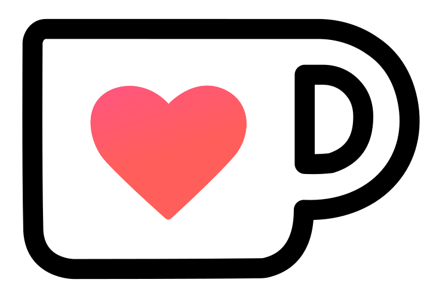
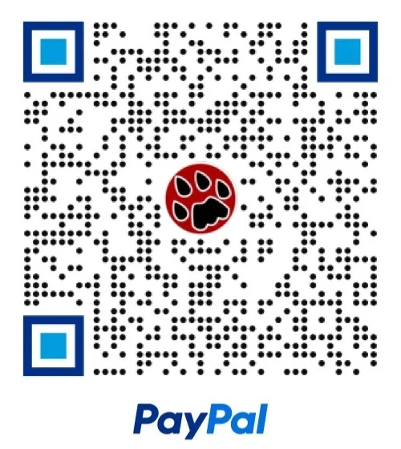

Support AnyDice!
You can make a donation via Ko-fi, either one-time or monthly. It supports multiple payment methods. 
You can also use the PayPal app:

Why Donate?
It would be nice if enough gets donated to cover the costs of keeping AnyDice running. Also, getting a donation is definitely an incentive for me to spend more time on AnyDice! Write an article, improve the documentation, enhance the interface. Those kind of things.